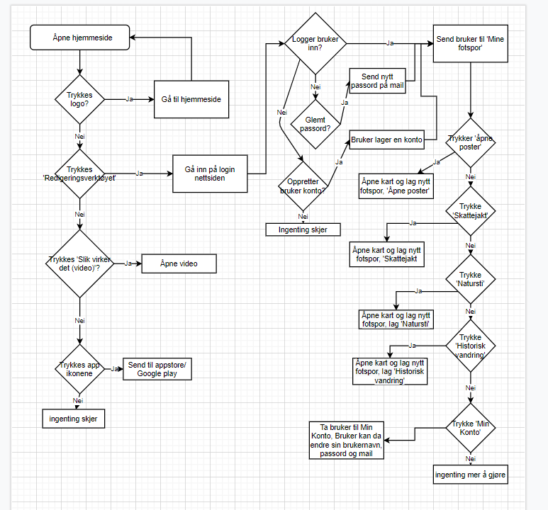

| 1. Et dataprogram er noe som forteller hva datamaskinene skal gjøre steg for steg. Hvert steg har tydelige instruksjoner som datamaskinen klarer å tyde og utføre. For eksempel å legge sammen to tall eller lese en linje. |
| 2. En serverside er et eller flere programmer som kjøres på webserveren, serversiden tar seg av tunge programoppgaver og kommunikasjon med eventuelle databaser eller andre ressurser på nettet, mens en klientside er et program som kjøres lokalt i nettleseren og som håndterer utsenet eller da brukergrensesnittet. Dette er vanligvs laget med HTML, CSS og JavaScript. |
| 3. En native-app kjøres i opperativsystemet til den mobile enheten. De er ofte programert gjennom sine egne programmeringsspråk utgitt av produsentet, for eksempel så bruker Android Java og iOS-telefoner kan bruke Swift. Mens en hybrid-app kan da brukes mellom flere forskjellige opperativsystemer, noen ganger blir appen laget sånn at den kan kjøre i et eget avspillerprogram som pakkes inn i appen. |
| 4. Fordelen med å skissere koden på et ark først er at man kan finne ut av hvor koden bør stå og man kan finne ut av hva slags kode man kommer til å trenge, samtidig at man da har en plan på hvordan koden da skal se ut og hva det er den skal gjøre når du kjører den. |
| 5.  |
| 6. Kodeordet input kan få tak i verider fra brukeren og kan brukes for å gi en variabel en verdi. For å lage en variabel bruker man da var kommandoen og da et ord sånn at ordet man bruker blir en variabel. If og else betyr jo hvis og hvis ikke og man kan bruke disse kodeordene for å kunne sjekke verdier mellom to variabler eller en verdi og en variabel. Print brukes for å skrive ut tekster på nettsiden. Int brukes for å overføre tekst over til tall sånn at programmet skjønner at det skal være tall og ikke en tekst, int er da mer spesifik alle heltall. Man har også while, som blir brukt om det er noe man vil repetere mange ganger og kalles en løkke. while fungerer likt som if, med at den vil sammenligne to verdier. Arrayer er en liste med flere forskjellige verdier. Funkskjoner er en navngitt smaling med kode som vi kan kjøre npr vi ønsker. funksjoner blir normalt brukt for å dele opp programmer i forskjellige deler slik at vi får bedre oversikt over programmet. |
| 7. Syntaktiske feil er enkelt og greit en skrivefeil, man har da skrevet et ord feil. Sematiske feil er da det er en feil ved oppbyggning av koden, man har da for eksempel brukt else før en if. Logiske feil er da en feil når man kjører programmet, dette er ofte matematiske feil, for eksempel kan man ha delt på 0 eller laget en løkke som aldri ender. |
| 8. Det er to forskjellige måter å få oversatt et høynivåspråk program sånn at datamaskinen og prosessoren skal kunne forstå den. Kompilering gjør man når man ønsker at programmet skal kjøre direkte i operativsystemet til datamaskinen og gjøres ved at man oversetter koden til det som kalles objektkode, dette får koden til å kjøre raskt, men den kan by på problemer for det tar tid å kompilere og at man må kompilere programmet for et spesifikt opperativsystem. Hvis man ønsker å lage til flere systemer må man da forandre litt på koden og kompilere på nytt. Tolking blir da kjørt i et avspiller-program som kalles interpreter og den oversetter hver settning i koden over til maskinkode og kjører den. Fordel med tolkning er at de kan kjøres på flere forskjellige platformer så lenge det finnes en interpreter. |
| 9. Hendelsesorientert programering handler om at man lager en kode basert på at man går ut i fra en hendelse som brukeren kan forårsake. Det kan være at man lager en kode for hva som skjer når brukeren trykker på en knapp eller skriver inn noen tall. |
| 10. 1) Et versjonskontrollsystem er et system som automatisk lagrer flere versjoner av koden din mens du arbaider. Dette er for at man skal kunne lett finne ut av hvor problemet har oppstått mens man har kodet, for man kan da sjekke arbeidet sitt tidligere da problemet kanskje før problemet oppstod og finne en løsning på problemet. |
| 2) Git, CVS, Aegis |
| 11. - Abstraksjon er når man lager en klasse, så trenger man ikke å bry seg om at koden ligger inne i klassen. Man treger bare å lage nye objekter ut av klassen og bruke metoden inne i dem. , Klasse er beskrivelsen av objektet. , Objekt blir brukt i sammenhengen at man deler opp programmet i mindre oppgaver, som hvert objekt skal da løse denne oppgaven de får tildelt. For eksempel at man har en bil, så er objektene hjul, motor og spylevæske. , Arv gir oss muligheten å la en klasse basere seg på en allerede eksisterende klasse og samtidig kan ha andre datamedlemmer og metoder. , Konstruktør er en metode som blir kjørt når vi lager et nytt objekt ut av klassen. , Polynmorfisme er at objekter kan behandles på samme måte og samtidig gjøre ulike ting. , Egenskap innenfor OOP er forskjellige ulike unike atributer som kan brukes under OOP. For eksempel har man gjenbruk, modularitet, abstraksjon, innkapsling, arv, polymorfisme, Design Patterns og UML. , Metode er bare et annet navn på funksjoner, innenfor OOP. , Innkapsling er en ting som gjør at man kan forandre på verdier og samtidig klare å forhindre ugyldige verdier, ved å lage en klasse slik at man da bruker metoder for å endre verdiene. , Modularitet er det at man samler sammen variabler og funksjoner inne i et objekt og dette gir oss mulighet til å organisere koden sånn at den blir delt opp i håndterbare deler. |
| 12. Det virker som at det er en fordel å bruke denne metoden når man jobber med store prosjekter hvor programmet skal ha mange funksjoner. Det virker som at koden blir systematisk og lett å lese og kanskje lettere å finne problemet hvis du vet hvilket objekt som er problemet. Også slipper man å måtte repetere seg så mye når man kan bruke arv for å kunne slippe å måtte skrive ned den samme koden på flere klasser og man kan legge til mer kode på de nye klassene. |